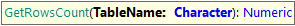

Here you can find specific GXtest commands for grids

Gets the number of rows of a table or grid
Parameters
Returns: the number of rows of the table
Examples
&driver.Verify(&driver.GetRowsCount("GridControlName") = 3)
Note: for tables of type Canvas this command returns the number of cells instead of rows.
This command is available since GeneXus 17 upgrade 1.
| Backlinks |
| Toc:GXtest v4 |